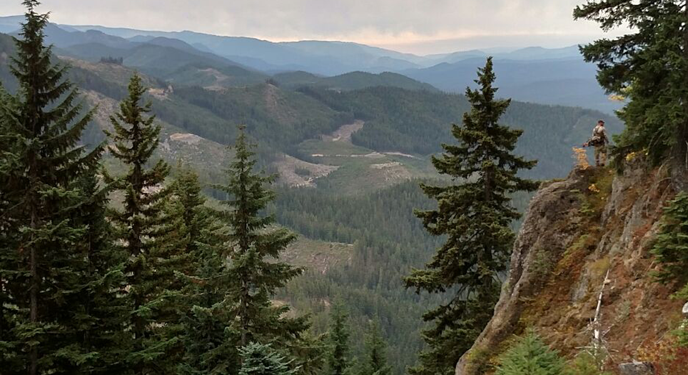
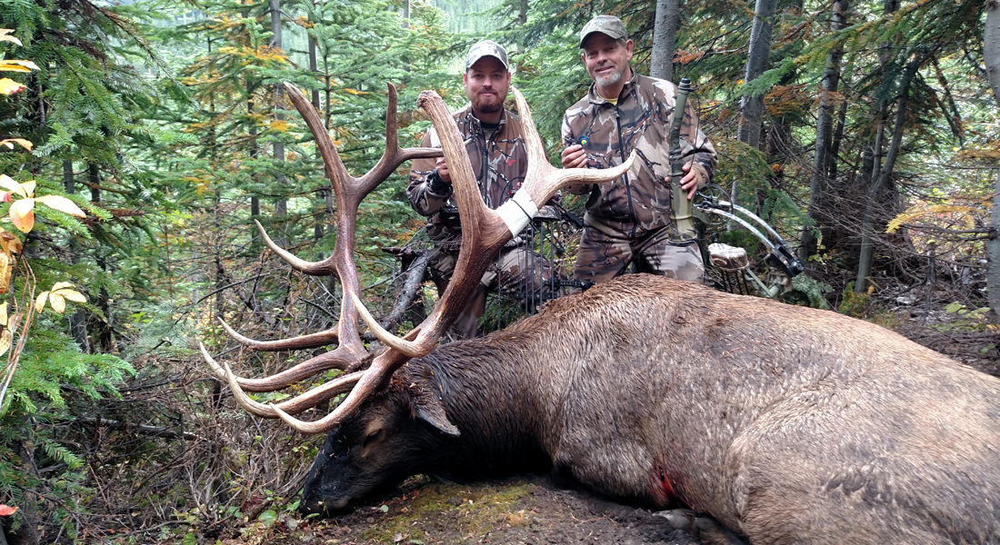
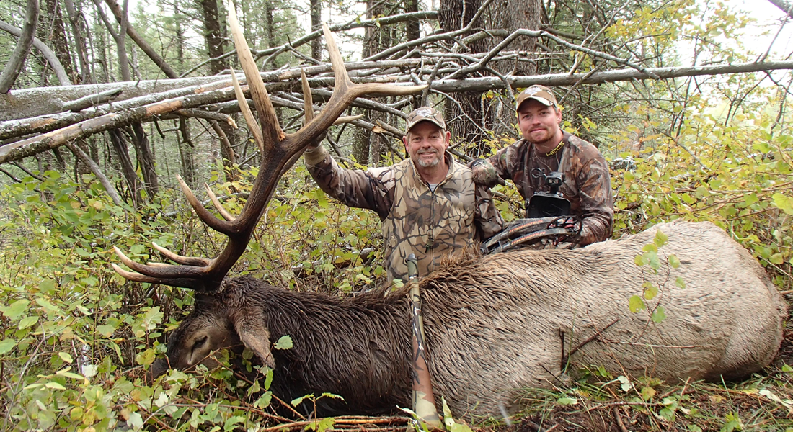
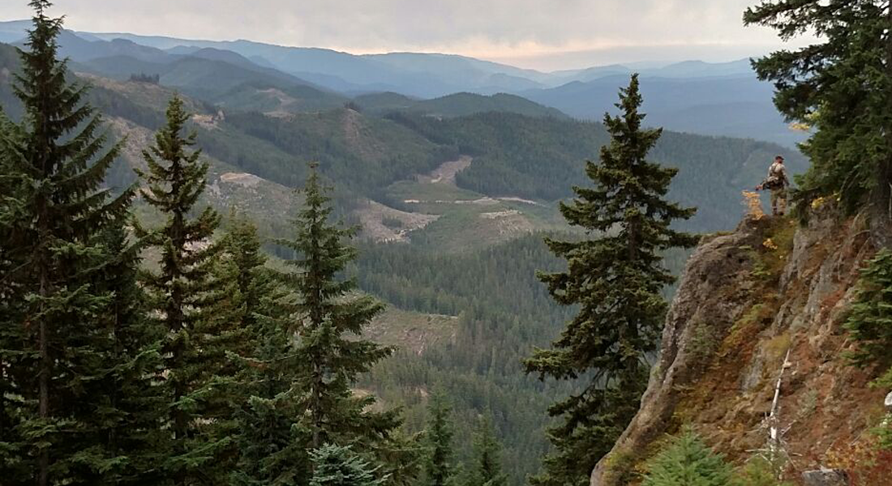
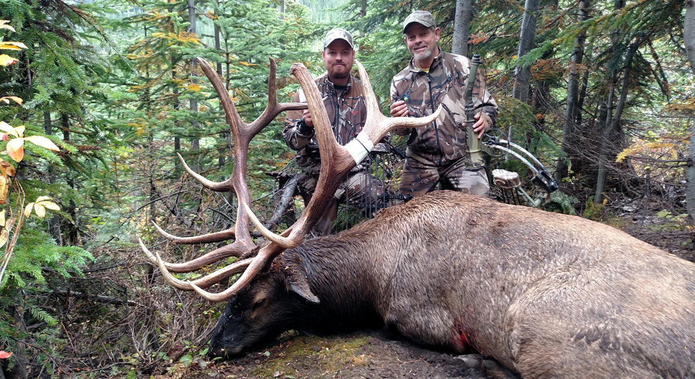
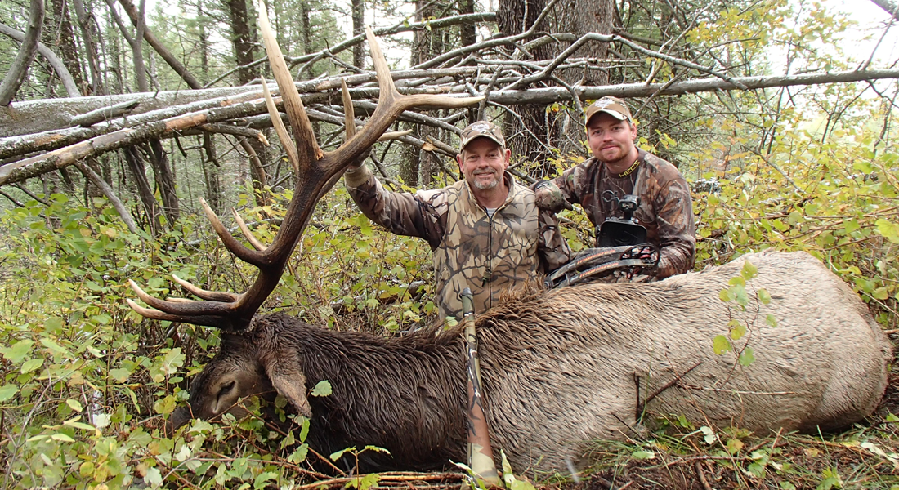

The Elk Rut
April 30, 2017
As the warm days of August come to a close, bachelor groups of bulls begin preparing for the rut by rubbing the velvet from their antlers, being careful not to damage them. The bulls remove the tattered velvet and polish their antlers by rubbing them on smaller diameter trees, shrubs and even the ground. This is the first evidence of the rut and I call this stage 1. Once you’ve located an area like this, mark it on your GPS or a map with the date you found it. During the first stage of the rut, bulls will begin sparring and establishing a pecking order. The mature bulls will move in amongst groups of cows and calves. These groups, called harems, are the scene of constant action from September through October. Stage 2 of the rut is the most obvious and is my favorite time to hunt. When the rut begins the bulls will begin bugling. I’ve found that as the rut progresses, so does the diameter of trees being rubbed. If you hike into an area and find a lot of larger diameter trees that have been rubbed, these are excellent spots to hunt. By inspecting the ground under the raked trees for tracks, you may be able

Regardless of what stage of the rut the elk are in, your best chances of finding elk is to search in the cool, dark pockets of timber on North facing slopes.
to tell how large the bull is. A mature bull will have a track of 4 1/2 inches in length or longer. During the second stage of the rut bulls become more vocal and this will be a hunters best chance to call a bull into close range. The herd bulls will aggressively guard their harem from other bulls. The majority of cows will be bred during this stage. When the cows come into estrus ("heat"), the mating begins. A bull elk must be ready -- a cow is receptive for mating less than 24 hours. She won't be willing to mate again until her second estrus cycle arrives in 20 days. Stage 3 of the rut occurs during the middle of October. This is the tail end of the rut. Harems disband when the rut ends. Cows regroup, and bulls of all ages may gather in bachelor groups. Regardless of what stage of the rut the elk are in, your best chances of finding elk is to search in the cool, dark pockets of timber on North facing slopes. In extremely dry years, elk congregate around water. If the bulls are not vocal, these herds can be difficult to locate. A hunter must identify fresh sign to help put him in the vicinity of an active elk herd.

Chad Berry arrowed this 6x6 bull elk on the 20th of September in his homestate of Washington. Chad's bull officially scored 320 1/8" Pope and Young points.
Pressuring the Bull
April 23, 2017
Calling bulls in close can be difficult. Every situation can be different. Elk are very unpredictable and a hunter must react fast. Pressuring the bull is a necessity about 80% of the time. Concentrate on calling the bull in the last 75 to 150 yards. Here is a typical scenario. Once I have a bull respond to my bugle, I try to work them in the same way every time. First I move in the direction that the bull is answering from. It never hurts not to answer him immediately. Next I bugle, trying to pinpoint the bull’s location. If the bull starts moving toward you, set up. If this doesn’t happen, move toward him. If the bull bugles on his own, don’t call and let him set the tempo. Each time the bull bugles, I like to move one-third of the distance to the bull and then set up. On my final set up I try to get on the same level or lower than the bull always remembering to keep the

During the filming of "Elk Hunters Training Day 2" Glen Berry called this great Idaho 6x6 bull elk into 35 yards using his Golden Tone Grunt Tube.
wind in my face at all times. Try to anticipate the trail that the bull will come in on. I start my calling with a few cow mews. If there is no response, bugle and grunt. If he then seems closer, stay put. If not, move up closer. Don’t worry about crashing brush, as long as the sounds are natural. At this point, you should be in the bull’s backyard. The closer you get by pressuring the bull, the better your chances are of making the bull react to your call. My goal is to get as close to the bull as possible with making the least amount of calls. I’ve called bulls in with as little as 4 or 5 cow calls. Every year there are a few days when bulls become extremely aggressive. From the time you make a call, a bull can travel hundreds of yards in just a few short minutes. Be careful never to bugle unless you’re ready for action.
From the time you make a call, a bull can travel hundreds of yards in just a few short minutes. Be careful never to bugle unless you’re ready for action.
As the warm days of August come to a close, bachelor groups of bulls begin preparing for the rut by rubbing the velvet from their antlers, being careful not to damage them. The bulls remove the tattered velvet and polish their antlers by rubbing them on smaller diameter trees, shrubs and even the ground. This is the first evidence of the rut and I call this stage 1. Once you’ve located an area like this, mark it on your GPS or a map with the date you found it. During the first stage of the rut, bulls will begin sparring and establishing a pecking order. The mature bulls will move in amongst groups of cows and calves. These groups, called harems, are the scene of constant action from September through October. Stage 2 of the rut is the most obvious and is my favorite time to hunt. When the rut begins the bulls will begin bugling. I’ve found that as the rut progresses, so does the diameter of trees being rubbed. If you hike into an area and find a lot of larger diameter trees that have been rubbed, these are excellent spots to hunt. By inspecting the ground under the raked trees for tracks, you may be able
Regardless of what stage of the rut the elk are in, your best chances of finding elk is to search in the cool, dark pockets of timber on North facing slopes.
to tell how large the bull is. A mature bull will have a track of 4 1/2 inches in length or longer. During the second stage of the rut bulls become more vocal and this will be a hunters best chance to call a bull into close range. The herd bulls will aggressively guard their harem from other bulls. The majority of cows will be bred during this stage. When the cows come into estrus ("heat"), the mating begins. A bull elk must be ready -- a cow is receptive for mating less than 24 hours. She won't be willing to mate again until her second estrus cycle arrives in 20 days. Stage 3 of the rut occurs during the middle of October. This is the tail end of the rut. Harems disband when the rut ends. Cows regroup, and bulls of all ages may gather in bachelor groups. Regardless of what stage of the rut the elk are in, your best chances of finding elk is to search in the cool, dark pockets of timber on North facing slopes. In extremely dry years, elk congregate around water. If the bulls are not vocal, these herds can be difficult to locate. A hunter must identify fresh sign to help put him in the vicinity of an active elk herd.
Chad Berry arrowed this 6x6 bull elk on the 20th of September in his homestate of Washington. Chad's bull officially scored 320 1/8" Pope and Young points.
Calling bulls in close can be difficult. Every situation can be different. Elk are very unpredictable and a hunter must react fast. Pressuring the bull is a necessity about 80% of the time. Concentrate on calling the bull in the last 75 to 150 yards. Here is a typical scenario. Once I have a bull respond to my bugle, I try to work them in the same way every time. First I move in the direction that the bull is answering from. It never hurts not to answer him immediately. Next I bugle, trying to pinpoint the bull’s location. If the bull starts moving toward you, set up. If this doesn’t happen, move toward him. If the bull bugles on his own, don’t call and let him set the tempo. Each time the bull bugles, I like to move one-third of the distance to the bull and then set up. On my final set up I try to get on the same level or lower than the bull always remembering to keep the
During the filming of "Elk Hunters Training Day 2" Glen Berry called this great Idaho 6x6 bull elk into 35 yards using his Golden Tone Grunt Tube.
wind in my face at all times. Try to anticipate the trail that the bull will come in on. I start my calling with a few cow mews. If there is no response, bugle and grunt. If he then seems closer, stay put. If not, move up closer. Don’t worry about crashing brush, as long as the sounds are natural. At this point, you should be in the bull’s backyard. The closer you get by pressuring the bull, the better your chances are of making the bull react to your call. My goal is to get as close to the bull as possible with making the least amount of calls. I’ve called bulls in with as little as 4 or 5 cow calls. Every year there are a few days when bulls become extremely aggressive. From the time you make a call, a bull can travel hundreds of yards in just a few short minutes. Be careful never to bugle unless you’re ready for action.
From the time you make a call, a bull can travel hundreds of yards in just a few short minutes. Be careful never to bugle unless you’re ready for action.